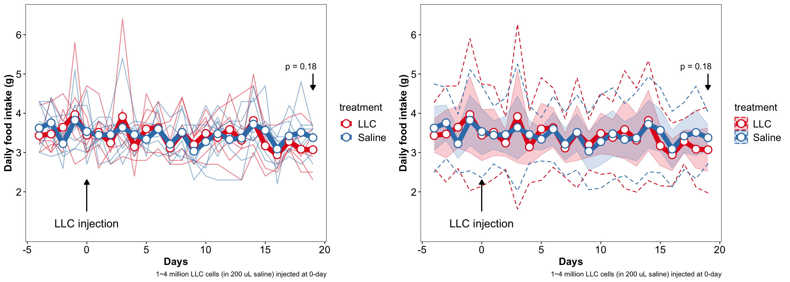
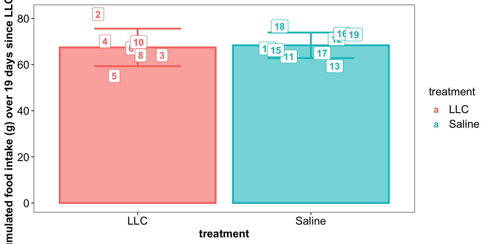
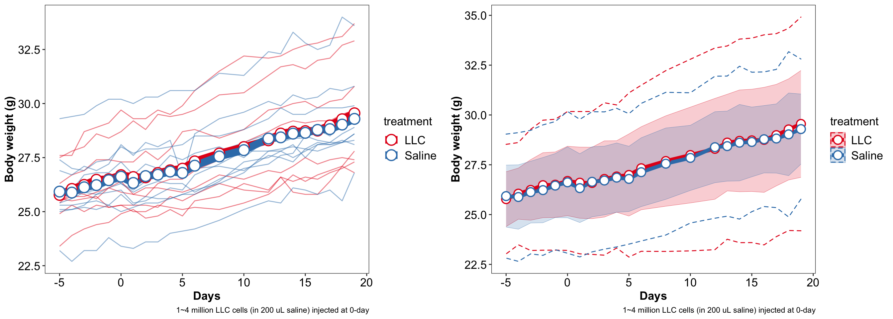
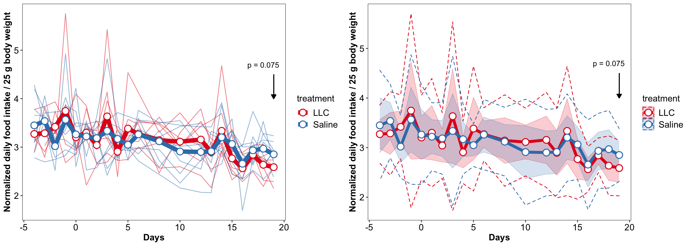
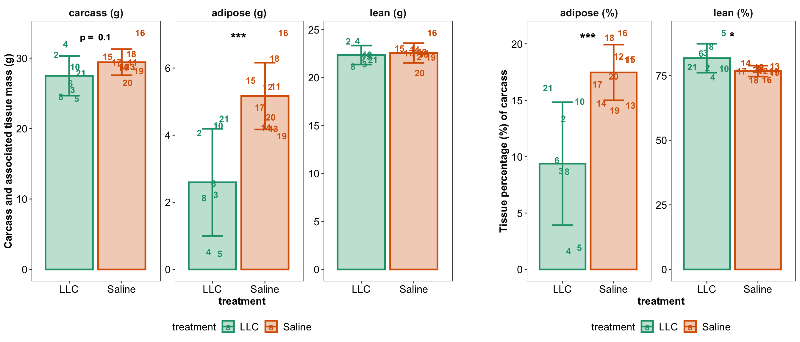
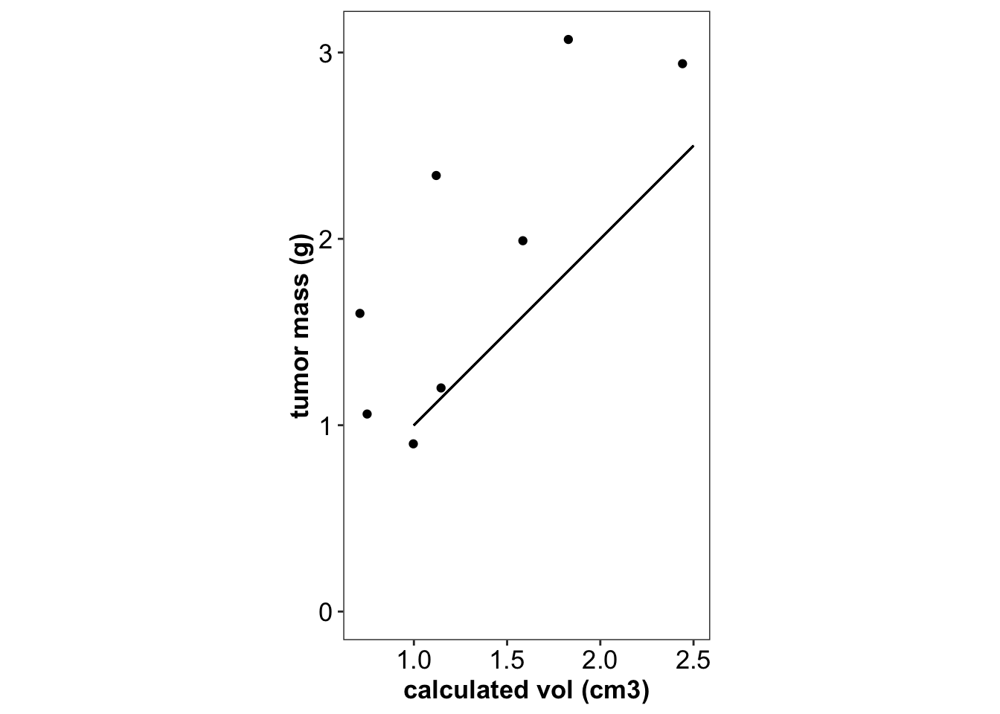
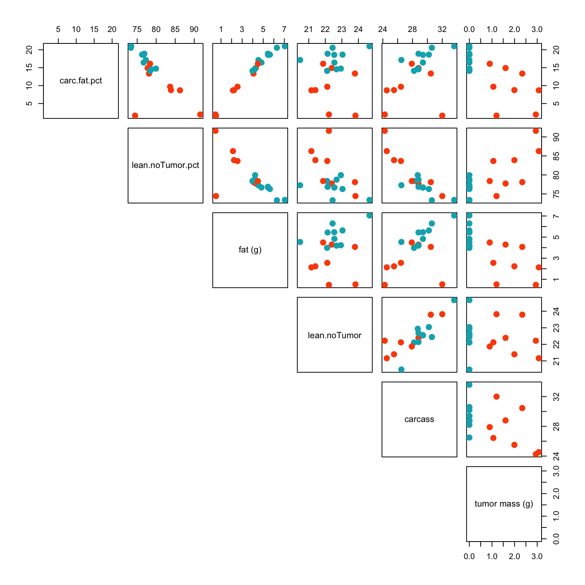
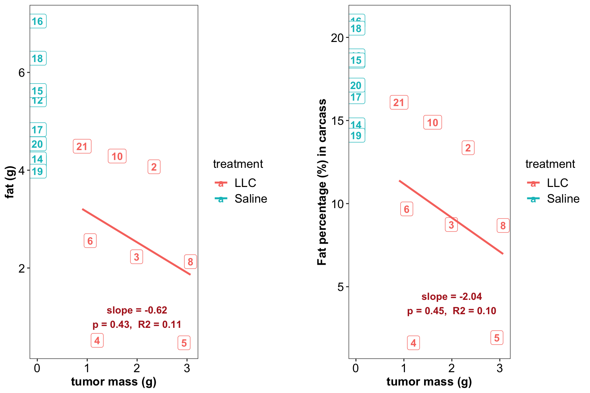
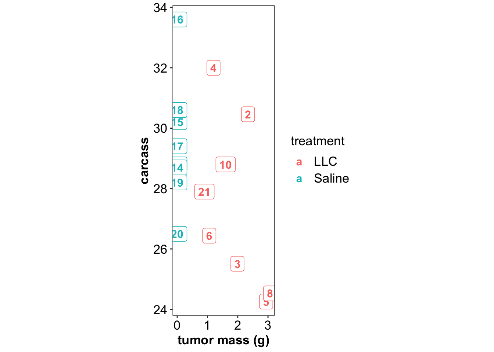
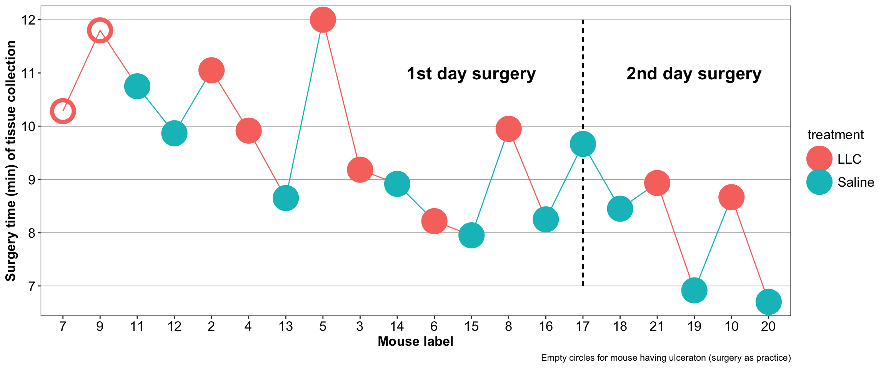

library(tidyverse)
library(rebus)
library(readxl)
library(RColorBrewer)
library(gridExtra)
library(cowplot)
library(broom)
library(ggpubr)
# theme
theme_set(theme_bw() +
theme(strip.background = element_blank(),
axis.text = element_text(color = "black", size = 13),
axis.title = element_text(color = "black", size = 13, face = "bold"),
strip.text = element_text(face = "bold", size = 13),
panel.grid = element_blank(),
legend.title = element_text(size = 13),
legend.text = element_text(size = 13)))
# significant notation
# single value
sigStar =function(x){
if (x > 0.05){ star = " "} else{
if (x>= 0.01) { star = "*"} else {
if (x >= 0.001) { star = "**"} else {
if (x >= 0.0001) { star = "***" } else {
star = "****"
}
}
}
}
return(star)
}
# multiple values in a single vector
sigStarS = function(vector){
output = c()
for (a in vector) {
output = append(output, sigStar(a))
}
return(output)
}
# food intake -<>--<>--<>--<>--<>--<>--<>--<>--<>--<>--<>--<>--<>--<>--<>--<>--<>--<>-
path = "/Users/Boyuan/Desktop/Harvard/Research/mice data.xlsx"
d.foodIntake = read_excel(path, sheet = "food intake", range = "A30:AB49")
# filter out mice #1, #7 and #9 which developed ulceration
d.foodIntake = d.foodIntake %>% filter(!mice %in% c(1, 7, 9))
d.foodIntake.tidy = d.foodIntake %>% select(-c(`-6D`, `-5D`)) %>%
gather(-c(mice, treatment), key = days, value = foodIntake) %>%
mutate(foodIntake = foodIntake %>% as.numeric(),
days = days %>% str_remove("D") %>% as.numeric())
d.foodIntake.summary = d.foodIntake.tidy %>%
group_by(treatment, days) %>%
summarise(foodIntake.mean = mean(foodIntake, na.rm = T),
foodIntake.sd = sd(foodIntake, na.rm = T))
# version 1
plt.dailyFoodIntake.1 = d.foodIntake.tidy[complete.cases(d.foodIntake.tidy), ] %>%
ggplot(aes(x = days, y = foodIntake, color = treatment)) +
geom_line(aes(group = mice), alpha = .5,
position = position_dodge(0)) +
# geom_point() +
# overall trend
geom_line(data = d.foodIntake.summary,
aes(color = treatment, y = foodIntake.mean),
size = 3) +
geom_point(data = d.foodIntake.summary,
aes(color = treatment, y = foodIntake.mean),
size = 4, shape = 21, stroke = 1, fill = "white") +
scale_color_brewer(palette = "Set1") +
scale_fill_brewer(palette = "Set1") +
labs(x = "Days", y = "Daily food intake (g)",
caption = "1~4 million LLC cells (in 200 uL saline) injected at 0-day") +
# add p value
geom_segment(x = 19, xend = 19, y = 5, yend = 4.6,
arrow = arrow(length = unit(.02, "npc"), type = "closed"),
color = "black") +
annotate("text", x = 18, y = 5.2, label = "p = 0.18")+
# add tumor injection label
geom_segment(x = 0, xend = 0, y = 1.5, yend = 2.3,
arrow = arrow(length = unit(.02, "npc"), type = "closed"),
color = "black") +
annotate("text", x = 0, y = 1.2, label = "LLC injection", size = 5)+
scale_y_continuous(limits = c(1, 6.5),
breaks = seq(2, 6, by = 1))
# plt.dailyFoodIntake.1
# version 2
plt.dailyFoodIntake.2 = d.foodIntake.summary %>%
ggplot(aes(x = days, y = foodIntake.mean, color = treatment, fill = treatment)) +
# 1 std range
geom_ribbon( aes(ymin = foodIntake.mean - foodIntake.sd,
ymax = foodIntake.mean + foodIntake.sd, x = days),
alpha = .2, size = .1) +
# 2 std range
geom_ribbon( aes(ymin = foodIntake.mean - foodIntake.sd * 2,
ymax = foodIntake.mean + foodIntake.sd * 2, x = days),
alpha = 0, lty = "dashed") +
geom_line(size = 3) +
geom_point(shape = 21, fill = "white", size = 4, stroke = 1) +
scale_color_brewer(palette = "Set1") +
scale_fill_brewer(palette = "Set1") +
labs(x = "Days", y = "Daily food intake (g)",
caption = "1~4 million LLC cells (in 200 uL saline) injected at 0-day") +
# add p value
geom_segment(x = 19, xend = 19, y = 5, yend = 4.6,
arrow = arrow(length = unit(.02, "npc"), type = "closed"),
color = "black") +
annotate("text", x = 18, y = 5.2, label = "p = 0.18") +
scale_y_continuous(limits = c(1, 6.5),
breaks = seq(2, 6, by = 1)) +
# add tumor injection label
geom_segment(x = 0, xend = 0, y = 1.5, yend = 2.3,
arrow = arrow(length = unit(.02, "npc"), type = "closed"),
color = "black") +
annotate("text", x = 0, y = 1.2, label = "LLC injection", size = 5)
# plt.dailyFoodIntake.2plt.dailyFoodIntake =
plot_grid(plt.dailyFoodIntake.1, plt.dailyFoodIntake.2, nrow = 1)
plt.dailyFoodIntake
# do t-test
hh = d.foodIntake.tidy %>% filter(days == 19)
t.test(hh$foodIntake ~ hh$treatment, var.equal = T)##
## Two Sample t-test
##
## data: hh$foodIntake by hh$treatment
## t = -1.3868, df = 14, p-value = 0.1872
## alternative hypothesis: true difference in means is not equal to 0
## 95 percent confidence interval:
## -0.7801253 0.1674269
## sample estimates:
## mean in group LLC mean in group Saline
## 3.071429 3.377778# accumulated food intake
d.foodIntake.tidy.missing.replaced =
d.foodIntake.tidy%>%
filter(days >=0) %>% # count from the zero day of tumor injection
group_by(days, treatment) %>%
# replace missing value with the average for treatment-day group
mutate(foodIntake = replace_na(foodIntake, replace = mean(foodIntake, na.rm = T)))
d.foodIntake.accumulated.tidy = d.foodIntake.tidy.missing.replaced %>%
group_by(treatment, mice) %>%
summarise(foodIntake.accumulated = sum(foodIntake))
d.foodIntake.accumulated.summary =
d.foodIntake.accumulated.tidy %>%
group_by(treatment) %>%
summarise(foodIntake.accumulated.mean = mean(foodIntake.accumulated),
foodIntake.accumulated.sd = sd(foodIntake.accumulated))d.foodIntake.accumulated.summary %>%
ggplot(aes(x = treatment, y = foodIntake.accumulated.mean, color = treatment, fill = treatment)) +
geom_bar(stat = "identity", alpha = .6, size = 1) +
geom_errorbar(aes(ymin = foodIntake.accumulated.mean - foodIntake.accumulated.sd,
ymax = foodIntake.accumulated.mean + foodIntake.accumulated.sd),
width = .5, size = 1) +
# geom_point(data = d.foodIntake.accumulated.tidy,
# aes(y = foodIntake.accumulated),
# shape = 21, fill = "white", size = 3,stroke = 1, position = position_jitter(.2, 0)) +
geom_label(data = d.foodIntake.accumulated.tidy,
aes(y = foodIntake.accumulated, label = mice),
size = 4, fill = "white", fontface = "bold", position = position_jitter(.3, 0)) +
labs(y = "Accumulated food intake (g) over 19 days since LLC injection") +
scale_y_continuous(breaks = seq(0, 100, 20))
# Body weight -<>--<>--<>--<>--<>--<>--<>--<>--<>--<>--<>--<>--<>--<>--<>--<>--<>-
d.bodyWeight = read_excel(path, sheet = "body weight", range = "A2:AL24")
# filter out mice #1, #7 and #9 which developed ulceration
d.bodyWeight = d.bodyWeight %>% filter(!mice %in% c(1, 7, 9))
# tidy up
d.bodyWeight.tidy = d.bodyWeight %>%
gather(-c(mice, treatment), key = days, value = bodyWeight) %>%
mutate(days = days %>% str_remove("D") %>% as.integer(),
bodyWeight = bodyWeight %>% as.numeric())
d.bodyWeight.tidy = d.bodyWeight.tidy %>% filter(days >= -5)
# summary
d.bodyWeight.tidy.summary = d.bodyWeight.tidy %>%
group_by(days, treatment) %>%
summarise(bodyWeight.mean = mean(bodyWeight, na.rm = T),
bodyWeight.sd = sd(bodyWeight, na.rm = T))
d.bodyWeight.tidy.summary =
d.bodyWeight.tidy.summary[d.bodyWeight.tidy.summary %>% complete.cases(), ]
# plot
# version 1
d.bodyWeight.tidy = d.bodyWeight.tidy[d.bodyWeight.tidy %>% complete.cases(), ]
plt.bodyweight.1 = d.bodyWeight.tidy %>%
ggplot(aes(x = days, y = bodyWeight, color = treatment, fill = treatment)) +
geom_line(aes(group = mice), alpha = .5) +
# overal trend
geom_line(data = d.bodyWeight.tidy.summary,
aes(x = days, y = bodyWeight.mean),
size = 4) +
geom_point(data = d.bodyWeight.tidy.summary,
aes(x = days, y = bodyWeight.mean),
shape = 21, fill = "white", size = 5, stroke = 1) +
scale_color_brewer(palette = "Set1") +
scale_fill_brewer(palette = "Set1") +
labs(x = "Days", y ="Body weight (g)",
caption = "1~4 million LLC cells (in 200 uL saline) injected at 0-day")
# plt.bodyweight.1
# version 2
plt.bodyweight.2 = d.bodyWeight.tidy.summary %>%
ggplot(aes(x = days, y = bodyWeight.mean, color = treatment, fill = treatment)) +
# 1 std range
geom_ribbon(aes(ymin = bodyWeight.mean - bodyWeight.sd,
ymax = bodyWeight.mean + bodyWeight.sd),
alpha = .2, size = .1) +
# 2 std range
geom_ribbon(aes(ymin = bodyWeight.mean - 2 * bodyWeight.sd,
ymax = bodyWeight.mean + 2 * bodyWeight.sd),
alpha = 0, lty = "dashed") +
# trend line
geom_line(size = 2) +
geom_point(shape = 21, fill = "white", size = 4, stroke = 1) +
scale_color_brewer(palette = "Set1") +
scale_fill_brewer(palette = "Set1") +
labs(x = "Days", y ="Body weight (g)",
caption = "1~4 million LLC cells (in 200 uL saline) injected at 0-day")
# plt.bodyweight.2plt.bodyweight = plot_grid(plt.bodyweight.1, plt.bodyweight.2, nrow = 1)
plt.bodyweight
# combine tumor weight and food intake
d.all.tidy = d.foodIntake.tidy %>%
left_join(d.bodyWeight.tidy, by = c("mice", "days", "treatment")) %>%
mutate(foodIntake.per25gBodyWeight = foodIntake/bodyWeight * 25)
# normalized food intake
d.normalizedFoodIntake = d.all.tidy %>% group_by(treatment, days) %>%
summarise(foodIntake.per25gBodyWeight.mean = mean(foodIntake.per25gBodyWeight, na.rm = T),
foodIntake.per25gBodyWeight.sd = sd(foodIntake.per25gBodyWeight, na.rm = T))
# combine food intake, weight, and body-weight normalized food intake summary data
d.all.summary = d.foodIntake.summary %>%
left_join(d.bodyWeight.tidy.summary, by = c("treatment", "days")) %>%
left_join(d.normalizedFoodIntake, by = c("treatment", "days"))
## plot body weight-normalized food intake
# Version 1
plt.dailyFoodIntake.Normalized.1 =
d.all.tidy[complete.cases(d.all.tidy), ] %>%
ggplot(aes(x = days, y = foodIntake.per25gBodyWeight, color = treatment)) +
geom_line(aes(group = mice), alpha = .5) +
scale_color_brewer(palette = "Set1") +
scale_fill_brewer(palette = "Set1") +
labs(x = "Days", y = "Normalized daily food intake / 25 g body weight") +
geom_line(data = d.all.summary[complete.cases(d.all.summary), ],
aes(group = treatment, y = foodIntake.per25gBodyWeight.mean), size = 3) +
geom_point(data = d.all.summary[complete.cases(d.all.summary), ],
aes(group = treatment, y = foodIntake.per25gBodyWeight.mean),
shape = 21, fill = "white", size = 4, stroke = 1) +
# add p value
geom_segment(x = 19, xend = 19, y = 4.5, yend = 4,
arrow = arrow(length = unit(.02, "npc"), type = "closed"),
color = "black") +
annotate("text", x = 18, y = 4.7, label = "p = 0.075")
# plt.dailyFoodIntake.Normalized.1
# version 2
plt.dailyFoodIntake.Normalized.2 =
d.all.summary[complete.cases(d.all.summary), ] %>%
ggplot(aes(x = days, y = foodIntake.per25gBodyWeight.mean, color = treatment, fill = treatment)) +
# 1 std range
geom_ribbon(aes(ymin = foodIntake.per25gBodyWeight.mean - foodIntake.per25gBodyWeight.sd,
ymax = foodIntake.per25gBodyWeight.mean + foodIntake.per25gBodyWeight.sd),
alpha = .2, size = .1) +
# 2 std range
geom_ribbon(aes(ymin = foodIntake.per25gBodyWeight.mean - 2 * foodIntake.per25gBodyWeight.sd,
ymax = foodIntake.per25gBodyWeight.mean + 2 * foodIntake.per25gBodyWeight.sd),
alpha = 0, lty = "dashed") +
labs(x = "Days", y = "Normalized daily food intake / 25 g body weight") +
# trend line
geom_line(size = 2) +
geom_point(shape = 21, fill = "white", size = 4, stroke = 1) +
scale_color_brewer(palette = "Set1") +
scale_fill_brewer(palette = "Set1") +
labs(x = "Days", y ="Normalized daily food intake / 25 g body weight") +
# add p value
geom_segment(x = 19, xend = 19, y = 4.5, yend = 4,
arrow = arrow(length = unit(.02, "npc"), type = "closed"),
color = "black") +
annotate("text", x = 18, y = 4.7, label = "p = 0.075")
# plt.dailyFoodIntake.Normalized.2plt.dailyFoodIntake.Normalized =
plot_grid(plt.dailyFoodIntake.Normalized.1,
plt.dailyFoodIntake.Normalized.2,
nrow = 1)
plt.dailyFoodIntake.Normalized
# do statistical test
x = d.all.tidy %>% filter(days == 19)
t.test(x$foodIntake.per25gBodyWeight ~ x$treatment, var.equal = T)##
## Two Sample t-test
##
## data: x$foodIntake.per25gBodyWeight by x$treatment
## t = -1.9219, df = 14, p-value = 0.07521
## alternative hypothesis: true difference in means is not equal to 0
## 95 percent confidence interval:
## -0.5578991 0.0305762
## sample estimates:
## mean in group LLC mean in group Saline
## 2.587158 2.850820# tumor size
d.tumor = read_excel(path, sheet = "tumor", range = "A1:F21")
d.tumor = d.tumor %>% filter(!mice %in% c(7, 9)) # remove mice #7 & 9 having huge ulceration
# body composition
d.BodyComposition = read_excel(path, sheet = "body composition", range = "A1:J21") %>%
select(-c(accuracy, 'F.water percent', 'T.water percent', contains("water")))
d.BodyComposition = d.BodyComposition %>%
filter(!mice %in% c(7, 9)) # remove mice #7 & 9 having huge ulceration
# combine with tumor mass
d.BodyComposition = d.BodyComposition %>%
left_join(d.tumor, by = c("mice", "treatment"))
d.BodyComposition = d.BodyComposition %>%
mutate(
carcass = `body weight (g)` - `tumor mass (g)`,
carc.fat.pct = `fat (g)` / carcass * 100,
lean.noTumor = `lean (g)` - `tumor mass (g)`,
lean.noTumor.pct = lean.noTumor / carcass * 100)
# plot composition lean & fat with LLC vs. control
d.BodyComposition.leanFat = d.BodyComposition %>%
select(mice, treatment, contains("pct"), `fat (g)`, lean.noTumor, carcass)
d.BodyComposition.leanFat.tidy = d.BodyComposition.leanFat %>%
gather(-c(mice, treatment), key = aspect, value = value)
# summary
d.BodyComposition.leanFat.summary = d.BodyComposition.leanFat.tidy %>%
group_by(treatment, aspect) %>%
summarise(value.mean = mean(value, na.rm = T), value.sd = sd(value, na.rm = T))
# t test
d.t.test.bodyComposition = d.BodyComposition.leanFat.tidy %>%
group_by(aspect) %>%
nest(-aspect) %>%
mutate(t.test = map(data, ~t.test(value ~ treatment, data = ., var.equal = T)),
glanced = map(t.test, tidy)) %>%
unnest(glanced) %>% select(aspect, p.value) %>%
mutate(stars = sigStarS(p.value))
d.BodyComposition.leanFat.summary = d.BodyComposition.leanFat.summary %>%
left_join(d.t.test.bodyComposition)
# plot
aspects.labs = c("adipose (%)", "carcass (g)", "adipose (g)", "lean (g)", "lean (%)")
names(aspects.labs) = d.BodyComposition.leanFat.summary$aspect %>% unique()
# absolute mass
plt.composition.mass = d.BodyComposition.leanFat.summary %>%
filter(!aspect %>% str_detect("pct")) %>%
ggplot(aes(x = treatment, y = value.mean, color = treatment, fill = treatment)) +
geom_bar(stat = "identity", position = position_dodge(.9), alpha = .3, size = 1) +
scale_color_brewer(palette = "Dark2") +
scale_fill_brewer(palette = "Dark2") +
# geom_point(data = d.BodyComposition.leanFat.tidy %>% filter(!aspect %>% str_detect("pct")),
# aes(y = value), position = position_jitterdodge(dodge.width = .9, jitter.width = .2),
# shape = 21, fill = "white", size = 3, stroke = 1) +
geom_errorbar(aes(ymin = value.mean - value.sd,
ymax = value.mean + value.sd),
position = position_dodge(.9), width = .4, size = 1) +
facet_wrap(~aspect, nrow = 1, scales = "free_y",
labeller = labeller(aspect = aspects.labs) ) +
labs(y = "Carcass and associated tissue mass (g)") +
theme(legend.position = "bottom") +
# significant stars
geom_text(aes(label = stars,
x = 1.5, y = c(33, 6.9, 24) %>% rep(2) ),# star position manually input
size = 6, color = "black", fontface = "bold") +
# add mice label
geom_text(data = d.BodyComposition.leanFat.tidy %>% filter(!aspect %>% str_detect("pct")),
aes(y = value, label = mice), size = 4, fontface = "bold", # color = "black",
position = position_jitterdodge(dodge.width = .9, jitter.width = .7))+
# p value for carcass
geom_text(aes(label = paste("p = ", round(p.value, 2)),
x = 1.5, y = c(33, 6.9, 24) %>% rep(2) ),# star position manually input
size = c(4, 0, 0) %>% rep(2), color = "black", fontface = "bold") # p value for stars zero size
# plt.composition.mass
# percentage
plt.composition.pct =
d.BodyComposition.leanFat.summary %>%
filter(aspect %>% str_detect("pct")) %>%
ggplot(aes(x = treatment, y = value.mean, color = treatment, fill = treatment)) +
geom_bar(stat = "identity", position = position_dodge(.9), alpha = .3, size = 1) +
scale_color_brewer(palette = "Dark2") +
scale_fill_brewer(palette = "Dark2") +
# geom_point(data = d.BodyComposition.leanFat.tidy %>% filter(aspect %>% str_detect("pct")),
# aes(y = value), position = position_jitterdodge(dodge.width = .9, jitter.width = .2),
# shape = 21, fill = "white", size = 3, stroke = 1) +
geom_errorbar(aes(ymin = value.mean - value.sd,
ymax = value.mean + value.sd),
position = position_dodge(.9), width = .4, size = 1) +
# add mice label
geom_text(data = d.BodyComposition.leanFat.tidy %>% filter(aspect %>% str_detect("pct")),
aes(y = value, label = mice), size = 4, fontface = "bold", # color = "black",
position = position_jitterdodge(dodge.width = .9, jitter.width = .7))+
facet_wrap(~aspect, nrow = 1, scales = "free_y",
labeller = labeller(aspect = aspects.labs) ) +
labs(y = "Tissue percentage (%) of carcass") +
theme(legend.position = "bottom") +
# significant stars
geom_text(aes(label = stars,
x = 1.5, y = c(20.5, 90, 20.5, 90)),# star position manually input
size = 6, color = "black", fontface = "bold")
# plt.composition.pct# combine plotsyou
plt.composition =
plot_grid(plt.composition.mass, NULL, plt.composition.pct,
nrow = 1, rel_widths = c(6, .5, 4)) # add null to add gap between plots
plt.composition
# tumor size
d.tumor %>%
ggplot(aes(x = `calculated vol (cm3)`, y = `tumor mass (g)`)) +
geom_point() +
coord_equal() +
geom_segment(aes(x = 1, xend = 2.5, y = 1, yend = 2.5))
# body composition combine with tumor mass, showing pairwise correlation
d.BodyComposition.leanFat =
d.BodyComposition.leanFat %>%
left_join(d.tumor %>% select(mice, treatment, 'tumor mass (g)'),
by = c("mice", "treatment"))
# plot
color.treatment = c("#FC4E07", "#00AFBB")
names(color.treatment) = c("LLC", "Saline")d.BodyComposition.leanFat %>% select(-c(mice, treatment)) %>%
pairs(pch = 19, cex = 1.5, lower.panel = NULL,
col = color.treatment[d.BodyComposition.leanFat$treatment])
# cloer look of tumor and fat loss
# calculate correlation
kk = d.BodyComposition.leanFat %>% filter(treatment == "LLC")
lm(kk$`fat (g)` ~ kk$`tumor mass (g)`) %>% summary()##
## Call:
## lm(formula = kk$`fat (g)` ~ kk$`tumor mass (g)`)
##
## Residuals:
## Min 1Q Median 3Q Max
## -2.5011 -0.7791 -0.0168 1.3414 1.7554
##
## Coefficients:
## Estimate Std. Error t value Pr(>|t|)
## (Intercept) 3.7648 1.4986 2.512 0.0458 *
## kk$`tumor mass (g)` -0.6198 0.7330 -0.845 0.4303
## ---
## Signif. codes: 0 '***' 0.001 '**' 0.01 '*' 0.05 '.' 0.1 ' ' 1
##
## Residual standard error: 1.629 on 6 degrees of freedom
## Multiple R-squared: 0.1065, Adjusted R-squared: -0.04247
## F-statistic: 0.7148 on 1 and 6 DF, p-value: 0.4303lm(kk$carc.fat.pct ~ kk$`tumor mass (g)`) %>% summary()##
## Call:
## lm(formula = kk$carc.fat.pct ~ kk$`tumor mass (g)`)
##
## Residuals:
## Min 1Q Median 3Q Max
## -9.1528 -2.3596 0.6435 4.7547 4.9327
##
## Coefficients:
## Estimate Std. Error t value Pr(>|t|)
## (Intercept) 13.222 5.142 2.571 0.0423 *
## kk$`tumor mass (g)` -2.037 2.515 -0.810 0.4490
## ---
## Signif. codes: 0 '***' 0.001 '**' 0.01 '*' 0.05 '.' 0.1 ' ' 1
##
## Residual standard error: 5.588 on 6 degrees of freedom
## Multiple R-squared: 0.09852, Adjusted R-squared: -0.05172
## F-statistic: 0.6557 on 1 and 6 DF, p-value: 0.449lm(kk$carcass ~ kk$`tumor mass (g)`) %>% summary()##
## Call:
## lm(formula = kk$carcass ~ kk$`tumor mass (g)`)
##
## Residuals:
## Min 1Q Median 3Q Max
## -2.518 -1.467 -1.099 1.424 3.777
##
## Coefficients:
## Estimate Std. Error t value Pr(>|t|)
## (Intercept) 30.842 2.366 13.034 1.26e-05 ***
## kk$`tumor mass (g)` -1.777 1.157 -1.535 0.176
## ---
## Signif. codes: 0 '***' 0.001 '**' 0.01 '*' 0.05 '.' 0.1 ' ' 1
##
## Residual standard error: 2.571 on 6 degrees of freedom
## Multiple R-squared: 0.2821, Adjusted R-squared: 0.1624
## F-statistic: 2.357 on 1 and 6 DF, p-value: 0.1756# plot fat mass
plt.fat.tumor.1 = d.BodyComposition.leanFat %>%
ggplot(aes(x = `tumor mass (g)`, y = `fat (g)`, color = treatment)) +
geom_label(size = 4, aes(label = mice), fontface = "bold") +
geom_smooth(data = kk, method = "lm", se = F) +
annotate(geom = "text", x = 2, y = 1, label = "slope = -0.62\np = 0.43, R2 = 0.11",
fontface = "bold", color = "firebrick")
# plt.fat.tumor.1
# plot fat percentage
plt.fat.tumor.2 = d.BodyComposition.leanFat %>%
ggplot(aes(x = `tumor mass (g)`, y = carc.fat.pct, color = treatment)) +
geom_label(size = 4, aes(label = mice), fontface = "bold") +
geom_smooth(data = kk, method = "lm", se = F) +
annotate(geom = "text", x = 2, y = 4, label = "slope = -2.04\np = 0.45, R2 = 0.10",
fontface = "bold", color = "firebrick") +
labs(y = "Fat percentage (%) in carcass")
# plt.fat.tumor.2plot_grid(plt.fat.tumor.1, NULL, plt.fat.tumor.2, nrow = 1, rel_widths = c(4, .5, 4))
# tumor vs. carcass
d.BodyComposition.leanFat %>%
ggplot(aes(x = `tumor mass (g)`, y = carcass, color = treatment)) +
geom_label(size = 4, aes(label = mice), fontface = "bold") +
coord_equal()
# surgery time
d.surgery = read_excel(path, sheet = "surgery time")
d.surgery$mice = d.surgery$mice %>% factor(levels = d.surgery$mice, ordered = T)
d.surgery %>%
ggplot(aes(x = mice, y = `Total time (min)`, color = treatment, fill = treatment, shape = Ulcer)) +
geom_segment(x = 15, xend = 15, y = 7, yend = 12, color = "black", lty = "dashed" ) +
geom_line(aes(group = 1)) +
geom_point(size = 8, stroke = 3) +
scale_shape_manual(values = c(T = 1, F= 21)) +
guides(shape = F) +
labs(x = "Mouse label", y = "Surgery time (min) of tissue collection") +
scale_y_continuous(breaks = seq(5, 12, 1)) +
theme(panel.grid.major.y = element_line(size = .1)) +
annotate(geom = "text", x = 12, y = 11, label = "1st day surgery", fontface = "bold", size = 6) +
annotate(geom = "text", x = 18, y = 11, label = "2nd day surgery", fontface = "bold", size = 6) +
labs(caption = "Empty circles for mouse having ulceraton (surgery as practice)")
Surgery getting faster